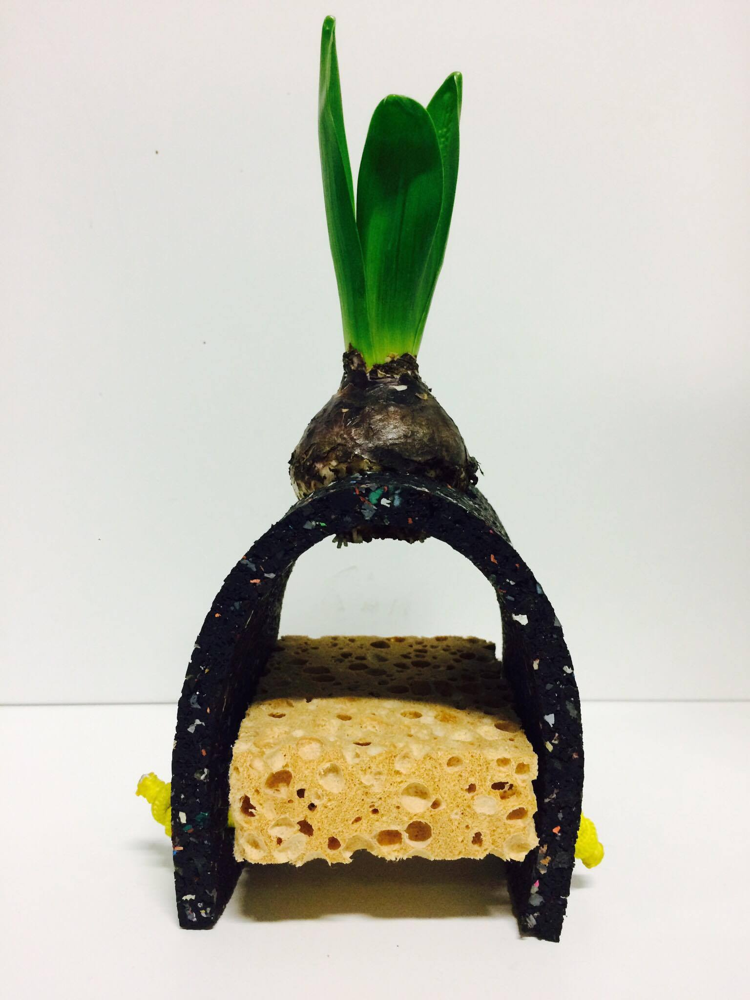
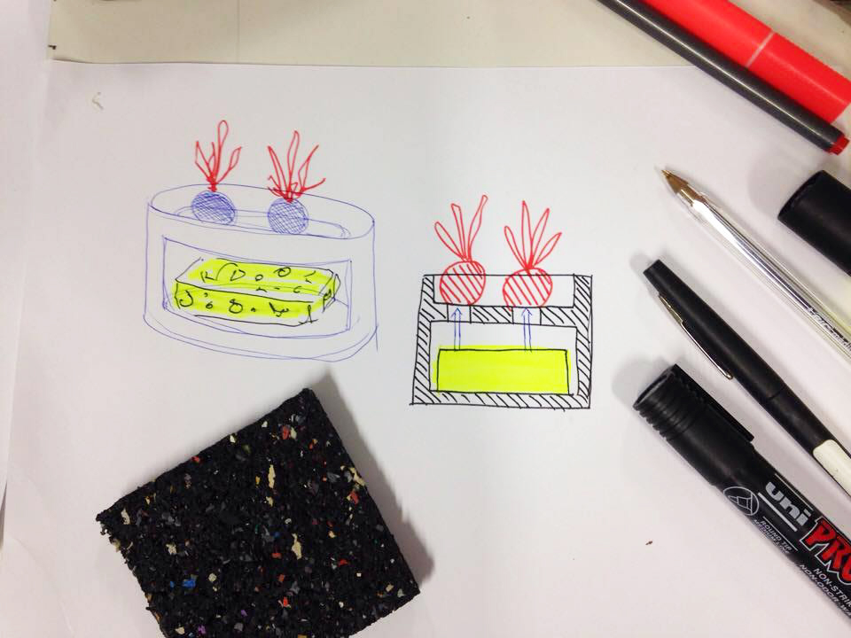
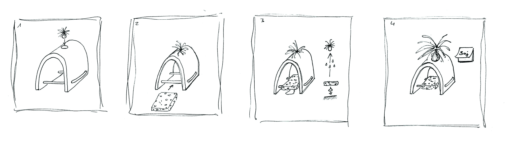
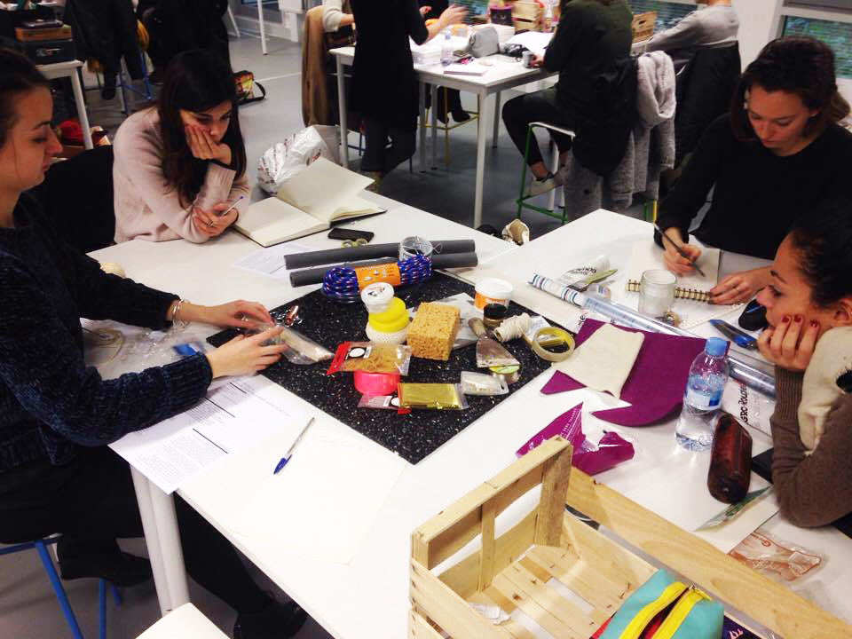
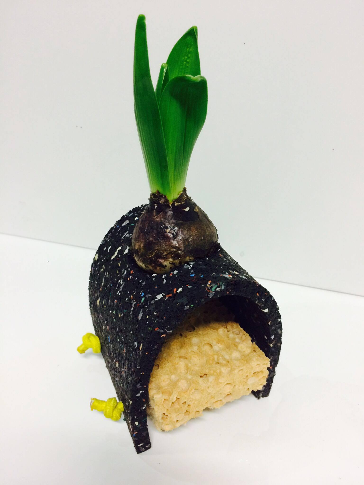

h2grow
Ce workshop, réalisé en groupe portait sur le potentiel créatif de la grande surface de bricolage, à savoir sur une sélection de matériaux originaux. Parmi les matériaux réunis nous avons cherché des affinités entre eux. Nos recherches ont donc découlé sur deux projet distincts. L’un des projets réalisés, H2(gr)O(w), utilise une dalle de caoutchouc et une élastique textile jaune. Il questionne la façon d’arroser ses plantes en créant une nouvelle source d’alimentation. Les «filles de l’air» sont des plantes particulières car elles poussent sans racines et presque sans eau. Ces bulbes n’ont besoin en effet que d’humidité ambiante pour pousser. Ainsi, nous avons eu l’idée de mettre à profit l’humidité des éponges utilisées au quotidien (nettoyage, vaisselle) pour irriguer ces plantes. L’objet créé permet de poser une éponge après usage et son humidité va donc nourrir le bulbe placé au dessus. C’est un objet minimaliste à poser près de son évier.
workshop, Université Jean Jaurès,Toulouse,avec Emilie Cazin, 2017
    